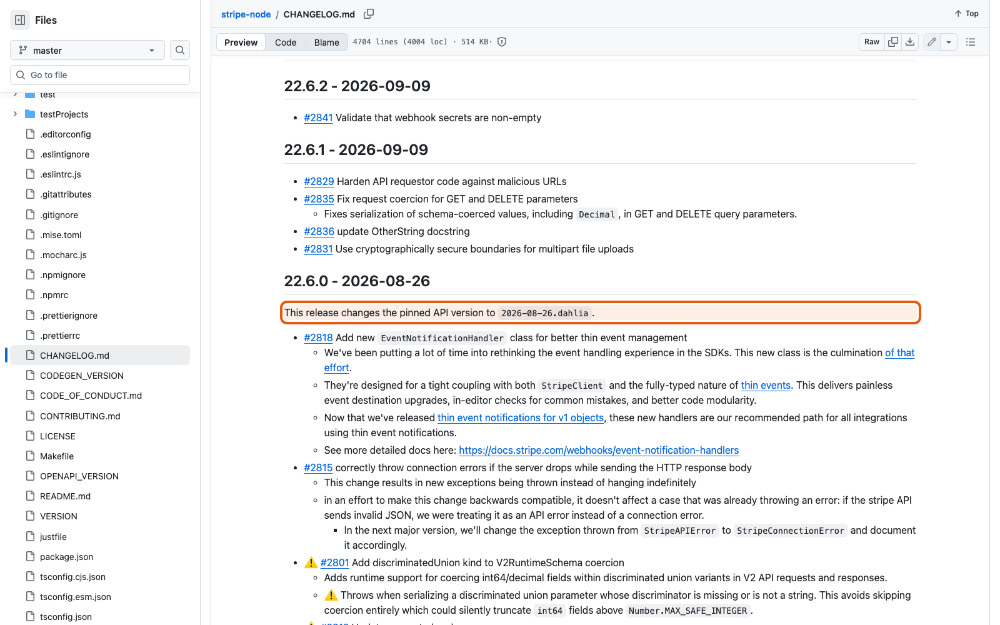
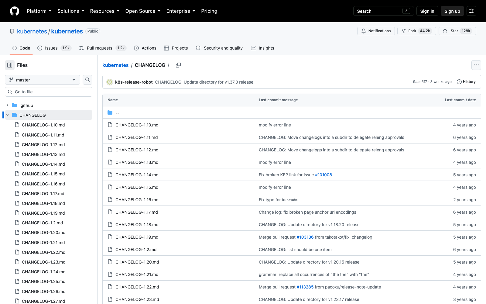

Справочник «Стандартизация HTTP API» · модуль 5 · Версии и изменения
Глава 5.4
CHANGELOG
и ADR
Описание OpenAPI отвечает на вопрос «как API устроен сейчас». Два вопроса оно не закрывает: что изменилось с прошлого раза и почему сделано именно так. На них отвечают два текстовых файла, которые лежат рядом с кодом и стоят дешевле любого совещания.
«История изменений пишется для потребителя API. Запись решения — для того, кто придёт через год и захочет всё переделать.»
- Категория
- Документы
- Уровень
- Базовый
- Связанные главы
- 5.1 Четыре номера · 5.3 Deprecation и Sunset · 7.1 Шаблон pull request
- Зачем это знать
- Чтобы решения и изменения не жили только в чьей-то памяти
§1Два вопроса, два документа
- читатель: потребитель API
- единица записи: выпуск версии
- отвечает: нужно ли мне что-то делать
- пишется при каждом выпуске
- читатель: разработчик, в том числе будущий
- единица записи: одно решение
- отвечает: какие были варианты и чем платим
- пишется один раз и не меняется
Ни один из них не заменяет описание OpenAPI и не заменяет друг друга. Описание — снимок настоящего, журнал — история, ADR — обоснование. Отсутствие любого из трёх обнаруживается одинаково: вопросом, на который никто не может ответить без археологии в истории коммитов.
§2Keep a Changelog
Формат журнала брать с нуля не нужно — есть общепринятый: Keep a Changelog. В учебном проекте ссылка на него стоит прямо в шапке файла.
# Changelog Формат — Keep a Changelog, версии — Semantic Versioning. Журнал написан для потребителей API: здесь только изменения публичного контракта. ## [Unreleased] ## [1.1.0] - 2026-09-16
info.version в описании, дата отвечает на вопрос «когда это стало правдой».привязка§3Журнал пишут для потребителя
Самая частая беда журналов — их пишут как список коммитов. Сравните две записи об одном и том же изменении:
refactor: вынес middleware в отдельный модульfix: поправил тесты после мержаchore: обновил зависимости
- Заголовок
X-Request-Idв каждом ответе; значение клиента возвращается, если оно корректно. ETagв ответах с одним обращением,304на совпавшийIf-None-Match.- Лимит операций записи:
429сRetry-After.
Проверка простая: возьмите строку журнала и спросите — может ли внешний разработчик, не видевший ваш код, понять, изменится ли что-то для него? «Вынес middleware в модуль» этой проверки не проходит: снаружи не изменилось ничего. «ETag в ответах» — проходит: клиент может начать им пользоваться.
Журнал изменений — не отчёт о работе команды, а инструкция для клиента. Всё, что не видно снаружи, в него не попадает.
§4Шесть разделов записи
| Раздел | Что сюда пишут | Влияние на SemVer |
|---|---|---|
| Added | Новые возможности: операция, параметр, заголовок, поле | MINOR |
| Changed | Изменения в существующем поведении | MINOR или MAJOR |
| Deprecated | Что объявлено устаревшим, чем заменить, когда отключат | MINOR |
| Removed | Что убрано окончательно | MAJOR |
| Fixed | Исправления поведения, не меняющие обещаний | PATCH |
| Security | Исправления, связанные с безопасностью | PATCH или MINOR |
Правый столбец — не украшение: раздел, в который попало изменение, почти определяет, какую часть номера повышать. Запись в Removed означает MAJOR и, значит, новый путь /api/v2. Если вам не хочется менять мажорную версию, изменение нужно не переименовывать, а переделывать — например, в устаревание из главы 5.3.
## [1.1.0] - 2026-09-16
### Added
- Заголовок `X-Request-Id` в каждом ответе; значение клиента возвращается, если оно корректно.
- `ETag` в ответах с одним обращением, `304 Not Modified` на совпавший `If-None-Match`.
- `If-Match` в `PATCH /api/v1/tickets/{ticket_id}`, ответ `412` при устаревшей версии.
- `Idempotency-Key` в `POST /api/v1/tickets`: повтор с тем же ключом не создаёт второе обращение.
### Deprecated
- `GET /api/v1/tickets/open` — используйте `GET /api/v1/tickets?status=open`.
Ответ содержит `Deprecation` и `Sunset`; отключение 2027-03-01.Разделов Removed и Changed здесь нет — и это не упущение, а следствие: в версии 1.1.0 ничего не убирали и не меняли, только добавляли. Именно поэтому она MINOR, а не MAJOR.
§5Как это делают другие


Общее у обоих: запись сообщает не «что мы сделали», а «что это значит для вас». Различия — в подробности, и она растёт вместе с числом клиентов.
§6ADR: запись решения
ADR — Architecture Decision Record, запись архитектурного решения. Один файл — одно решение. Формат появился из простого наблюдения: через год никто не помнит, почему выбрали так, и спор начинается заново, уже без исходных доводов.
В учебном проекте такой файл один — docs/adr/0001-api-versioning.md. Он отвечает на вопрос «почему версия в пути, а не в заголовке».
# ADR 0001. Мажорная версия API в пути URL - Статус: принято - Дата: 2026-09-15 ## Context Service Desk API используют веб-клиент поддержки и мобильное приложение сотрудников. Мобильное приложение обновляется у пользователей неделями, поэтому после несовместимого изменения старая и новая редакции контракта должны работать одновременно. Рассматривались три варианта: 1. мажорная версия в пути: /api/v1/tickets; 2. версия в заголовке: X-Api-Version, как в GitHub REST API; 3. версия в media type: Accept: application/vnd.servicedesk.v1+json.
Обратите внимание на две детали. Первая: перечислены отвергнутые варианты — без них решение нельзя обсуждать, можно только принять на веру. Вторая: контекст объясняет, почему вопрос вообще возник, — из-за медленно обновляющегося мобильного приложения. Изменись это обстоятельство, и решение можно пересматривать.
§7Четыре части ADR
## Decision Мажорная версия указывается в пути: /api/v1. Версия контракта ведётся по Semantic Versioning в info.version. ## Consequences - Версия видна в любом логе, ссылке и в адресной строке Swagger UI. - Старую и новую редакции можно направить на разные экземпляры сервиса правилом gateway. - Кэши и CDN различают редакции без настройки Vary. - Нельзя выпустить несовместимое изменение одной операции, не выпуская /api/v2 целиком. - Для перехода на заголовочную схему, если она понадобится, потребуется новый ADR.
Четвёртый пункт — минус выбранного решения, записанный автором добровольно. Это и отличает ADR от рекламы собственного выбора: документ, в котором одни достоинства, бесполезен, потому что не помогает будущему читателю понять, при каких условиях решение перестанет работать.
Если решение изменилось, заводят новый файл со ссылкой на прежний, а у прежнего ставят статус «заменено». Отредактированный задним числом ADR теряет весь смысл: по нему уже нельзя понять, что знали в момент решения.
§8Когда заводить ADR
Выбор способа версионирования, формата ошибок, схемы аутентификации, политики совместимости, формата пагинации — всё, что потом дорого менять и о чём будут спрашивать.
Имя переменной, выбор библиотеки для внутренней задачи, порядок полей в ответе — то, что меняется без последствий для клиентов.
Простой признак: если решение придётся объяснять человеку, который придёт через год, — заведите ADR. Если объяснять нечего, потому что решение очевидно из кода, — не заводите.
В этом справочнике ADR встречается трижды: он обосновал версию в пути (глава 5.1), на него ссылается политика совместимости (глава 5.2) и он же будет нужен при выборе схемы аутентификации в модуле 7. Один файл на решение, и каждый — на своём месте.
§9Частые ошибки
Deprecated обязательны и замена, и дата отключения.§10Проверьте себя
- На какие два вопроса отвечают CHANGELOG и ADR и чем оба отличаются от описания OpenAPI?
- Как проверить, что строка журнала написана для потребителя, а не для команды?
- Почему запись в разделе Removed почти всегда означает новую мажорную версию?
- Зачем в журнале нужен раздел Unreleased?
- Назовите четыре части ADR и скажите, какая из них самая полезная для будущего читателя.
- Что делают, если решение, описанное в ADR, изменилось?
Keep a Changelogновое сверхуUnreleasedдля потребителя APIAdded · ChangedDeprecated · RemovedFixed · SecurityСтатусContextDecisionConsequencesодин файл — одно решениеминусы записыватьне редактироватьСправочник «Стандартизация HTTP API» · модуль 5 · глава 5.4Макаров Максим Николаевич